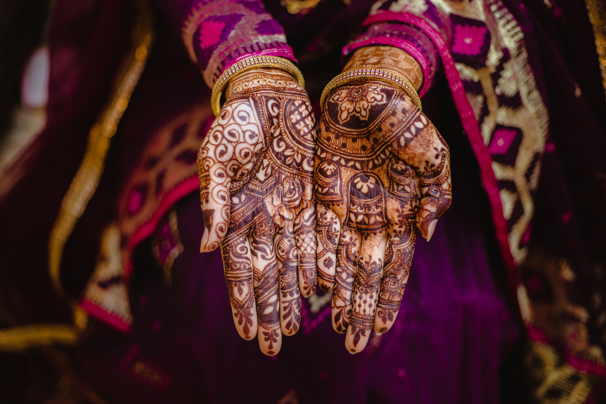
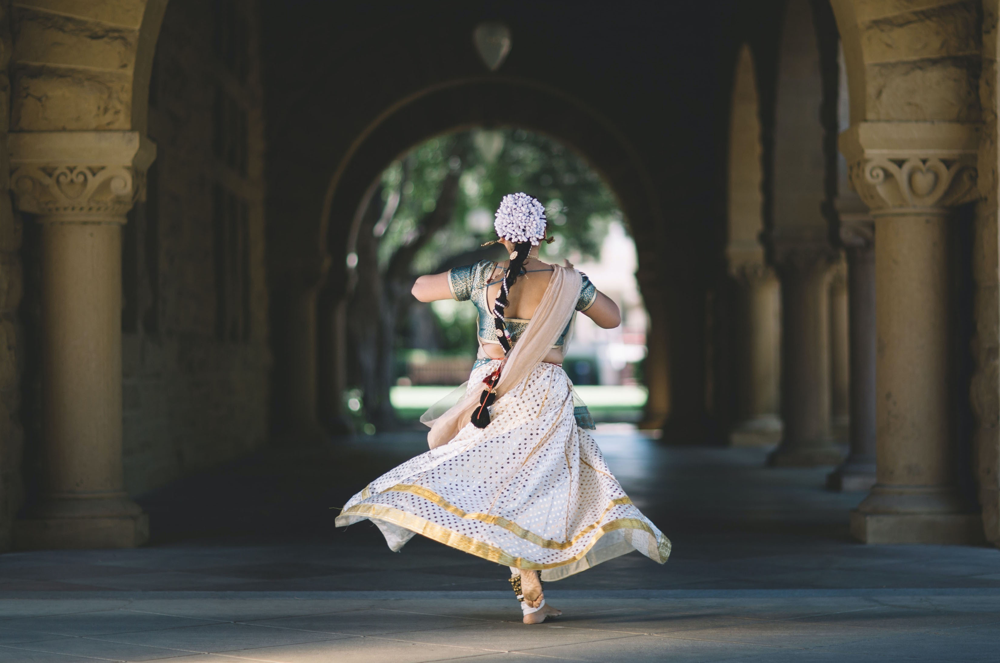
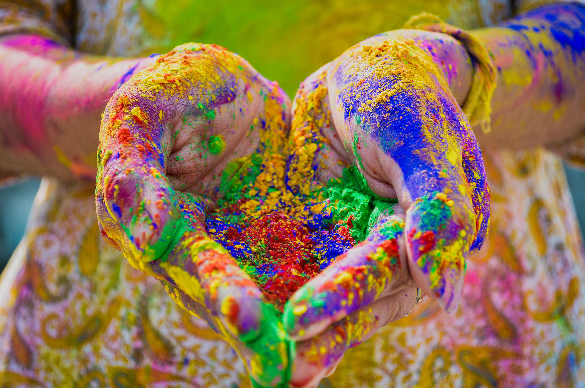
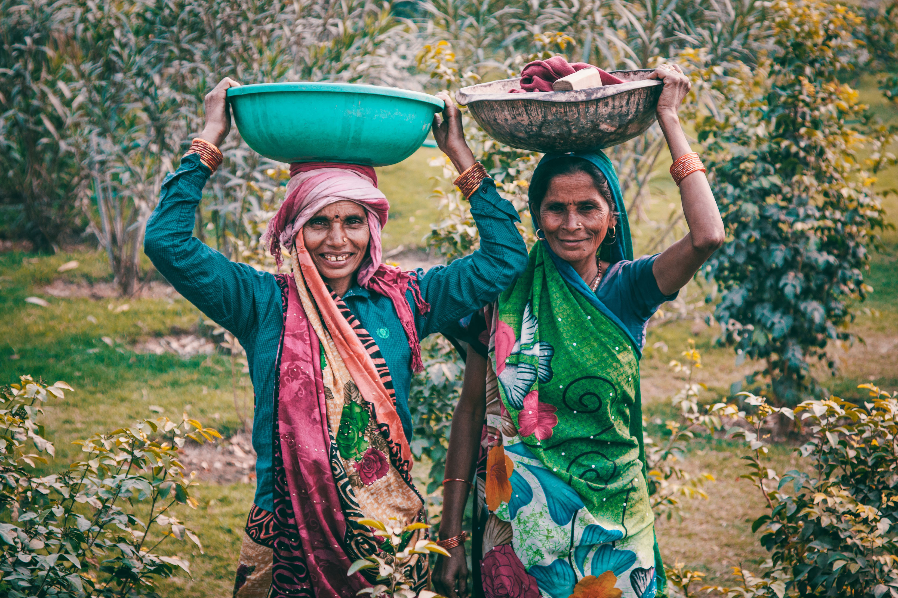
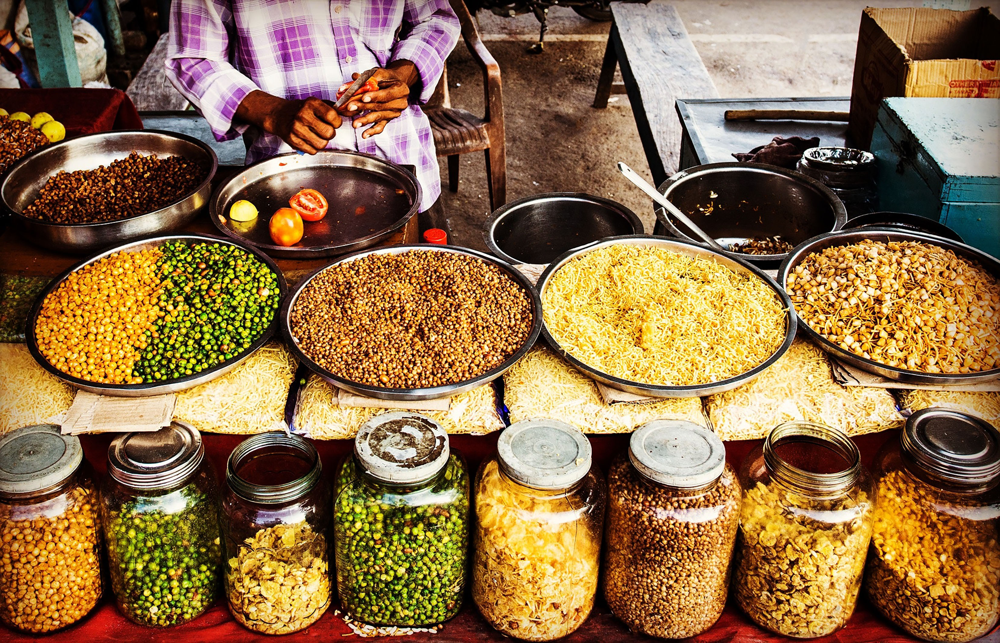
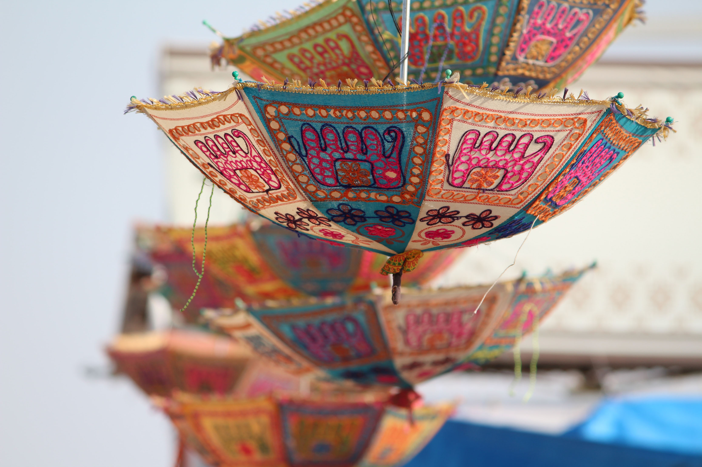
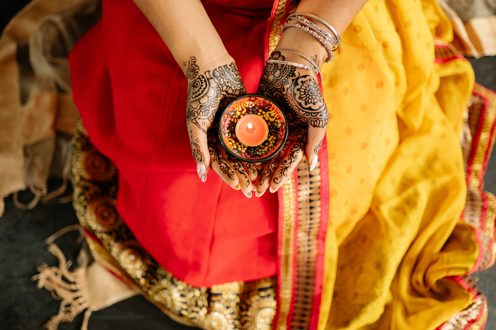
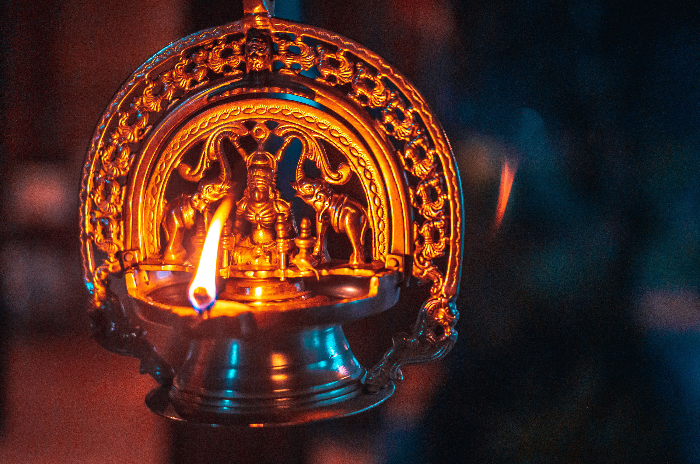

The Henna paste symbolizes good health and prosperity in marriage, and in some cultures, the darker the henna stain, the deeper the love between two individuals.

Bharatanatyam, Kathakali, Kathak, Manipuri, Kuchipudi, and Odissi are all popular folk dances in India.

The Holi Festival is celebrated as a way to welcome in spring, and also is seen as a new beginning where people can release all their inhibitions and start fresh.

Villages in India have boundless beauty surrounding them. Usually, these villages are tucked away in deserts, hilly areas, near forests or near some rivers.

Cumin, coriander, clove, cinnamon, turmeric, fenugreek, and cardamom are native spices to India.

Parasols are handmade and sold at markets to keep cool.

Diwali is a festival of lights that celebrates the triumph of light over darkness, good over evil and the human ability to overcome.

Agarbatti are a large part of the economy and many religions in the region.